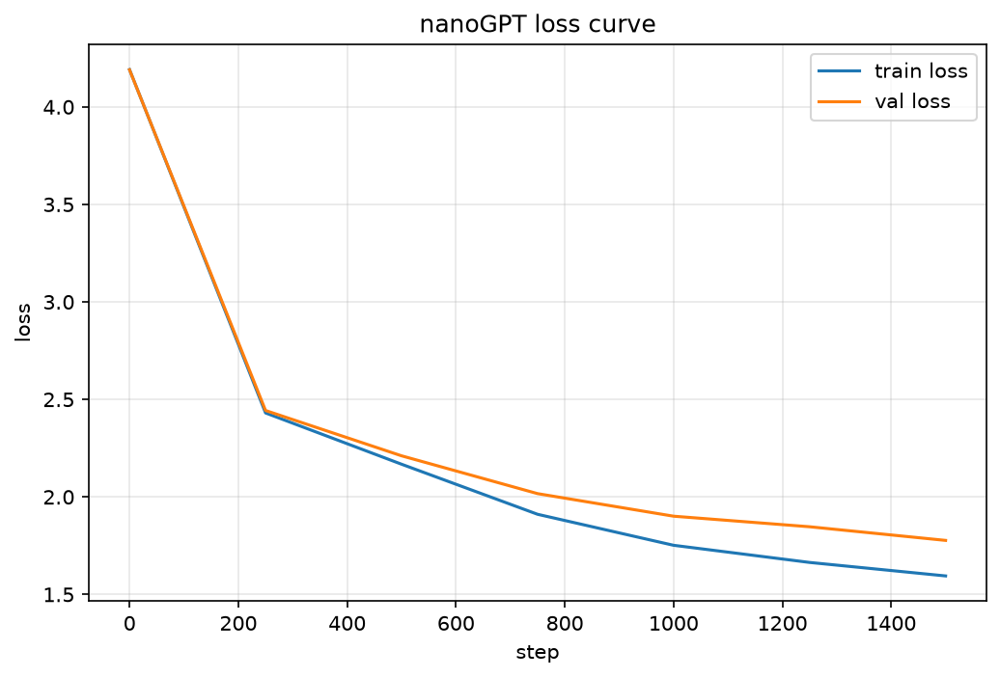
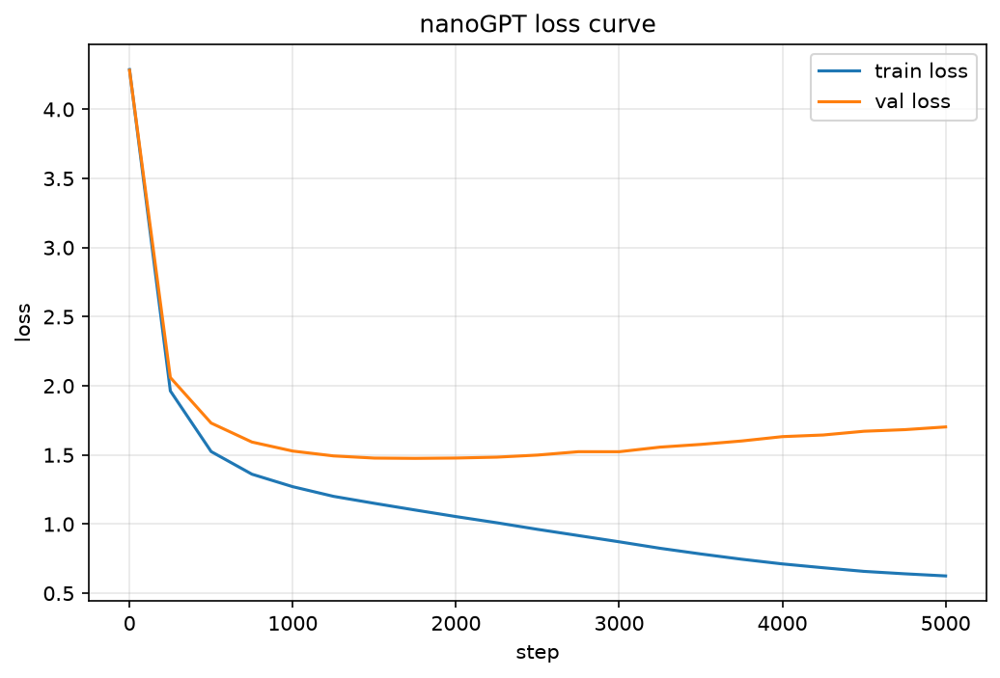

采样生成与过拟合
训练抬高真实下一字符概率；生成按学到的分布逐字外推，并用曲线判断过拟合。
本章讲「训完之后怎么用」：生成路径、temperature、top-k，以及如何用 train/val 曲线判断过拟合。重点是建立判断力——生成难看不等于公式错，曲线分叉也不等于代码坏了。
cd nanoGPT && source .venv/bin/activate
python lessons/lesson5_sample_temp.py
# 或用训好的权重真正续写：
python sample.py --out_dir=out-shakespeare-char --device=mps5.1 生成在代码里怎么走
外面是 sample.py 装载与打印；里面是 model.generate 一个字一个字往外吐。
sample.py → model.generate · 生成路径
- sample.py 装载 / 编码
- generate 内环（吐字）
- decode 打印
- 结束
训练时 Causal Mask 保证「只能看左边」；生成时每一步也只拿已经吐出的前文再猜下一个字——同一套自回归，只是不算 loss、不改权重（no_grad）。
\n 开始，或你给的 promptmultinomial，不是永远取 argmaxmax_new_tokens5.2 Temperature（温度）
模型刚算出「下一个字」的分数表（logits）。温度 T 决定：抽字时有多敢赌冷门。
T 很小：几乎永远点最高分那道 → 稳、但容易重复
T = 1：按推荐分正常抽签
T 很大：冷门菜也常被点到 → 花样多，也更容易乱七八糟
代码里就是把分数除以 T 再 Softmax：除得越大（T 越小），高低分差距被放大，越爱选第一名。
| $T$ | 效果 | 你看到的文字 |
|---|---|---|
| 很小（如 0.2） | 几乎总选最高分 | 保守、重复、「像背课文」 |
| $T=1$ | 按原分布抽 | 按模型学到的概率来 |
| $T>1$（如 1.5） | 分布更平 | 更跳脱，也可能更胡言 |
sample.py 默认 temperature=0.8：比 1 略保守一点，少一点瞎蹦。
5.3 Top-k
词表有很多字。有的字模型觉得「几乎不可能」，但概率不是绝对 0——万一抽中就出怪字。
Top-k = 只留推荐分最高的前 k 名，其余直接淘汰（logits 改成 $-\infty$，Softmax 后概率变 0），再在这 k 个里按概率抽。
- 作用：挡住极不可能的怪字符
- 莎士比亚字符级词表只有 65 个，默认
top_k=200→ 比 65 还大 → 等于几乎没截断；词表上万的大模型上更有用
5.4 如何读 train / val loss 曲线
- loss 越小越好（猜下一字猜得越准）
- 图上有两条线：蓝/ train = 练习册分数；橙/ val = 摸底考分数。选存档时盯摸底考，别只盯练习册。
过拟合 = 练习册越做越满分，换一套没见过的摸底卷反而更差 → 多半在背题，不是学会规律。
| train loss | val loss | |
|---|---|---|
| 像什么 | 练习册错得少不少 | 摸底考错得少不少 |
| 健康学习 | 两条线一起往下 | |
| 过拟合信号 | 还在往下 ↓ | 掉头往上 ↑ |
为什么容易发生？模型够大、训得够久，会把训练文本的细节甚至噪声也背下来；这些对练习册有用，换一段莎士比亚（验证集）就帮不上忙。语料小时特别常见。
怎么办（直觉）：
- 早停：摸底考最好时停 / 存那个 ckpt
- 正则：dropout、AdamW 的 weight decay（别胀太大）
- 数据更多样，或模型略小一点
一句话：过拟合 = 练得太专、考得变差。配置「只在 val 变好时存盘」，就是为了留泛化最好的那一版。
| train loss | val loss | |
|---|---|---|
| 全称 | 训练损失 | 验证损失 |
| 数据从哪来 | 训练集（会拿去改权重） | 验证集（只打分，不改权重） |
| 在问什么 | 「练习题熟不熟？」 | 「换卷还会不会？」 |
| 公式一样吗 | 一样，都是平均 Cross-Entropy；差别只在数据从哪抽 | |
在学规律；练习分略好于摸底分很正常。
背熟了训练文本，换一段反而更差。
你本机跑出的两张真实曲线

起点 ≈ 4.19（接近随机瞎猜 $\log 65$）；终点 train ≈ 1.59、val ≈ 1.78。
解读：两条线一起往下走，train 略低于 val → 正常学习，尚未明显过拟合。适合用来搞懂训练链路。 原文件：
nanoGPT/out-shakespeare-char/loss_curve.png

原文件：
nanoGPT/out-shakespeare-char-v2/loss_curve.png
- 开头（0→~500）：两条线一起从 ~4.2 掉到 ~2 → 「开窍了」，在学真规律
- 中段（~1500–2000）：橙线（摸底）掉到最低约 1.5 → 往往最好用的存档就在这附近
- 后半（2000→5000）：蓝线继续降到 ~0.6（练习越来越满分）；橙线慢慢升到 ~1.7（摸底变差）→ 开始背题
后半段 train↓ val↑ 不是程序坏了，是该早停 / 用摸底最好时的 ckpt，别用练习分最低那一刻。
书就那么厚，模型再大、再多刷几千遍，摸底分往往先好后差。所以配置常写：只在 val 变好时存盘——尽量留「泛化最好」的那一版。
- 练习分下降 ≠ 一定更好用
- 更关心摸底分（val）和采样读起来顺不顺
- 图 B 后半：练习↓ 摸底↑ = 过拟合
| 曲线长什么样 | 多半是什么 | 可以试什么 |
|---|---|---|
| 两条一起降（图 A） | 正常学习 | 可再训一阵观察 |
| 练习↓ 摸底↑（图 B 后半） | 过拟合 | 早停、dropout、模型小点、数据多点 |
| 长期晃、不往下 | 步子/batch/模型不搭 | 调 lr、batch，查数据 |
| 一直贴在 $\log 65$ 附近 | 几乎没在学 | 查 device、代码、学习率是不是 0 |
5.5 生成质量差 ≠ 训练公式错
你采样出来常有角色名、换行，但单词拼得怪怪的——对字符级小模型 + 短训来说，这很正常，不代表 loss / 反向传播写错了。
- 它学的是「下一个字符更像谁」，不是读懂剧情的「大脑」
- 轻量版大约 0.8M 参数，跟 ChatGPT 差好几个数量级
- 本课目标：搞懂训练→存档→吐字这条链路，不是做出能聊天的产品
拼写不稳、剧情不通 → 规模和数据还不够，不是公式废了
工业大模型：还是 next-token + CrossEntropy；差别在数据量、分词、模型规模、训多久和工程，不在「换了一套完全不同的数学」。
5.6 扩展：采样参数的调试清单
生成效果不理想时，按这个顺序排查更省时间：
- Loss 是否已从 ~4.1 明显下降？（没学会先别怪采样）
- 是否过拟合？（val 已升，可回退更好 checkpoint）
- temperature 是否极端？（先回到 0.8～1.0）
- top-k 是否过小/过大？
- prompt 是否太短或超出模型能力（小模型字符级剧本）
把「模型能力」和「解码策略」分开看，是使用一切生成式模型的基本功。
自测题
Q1：把 temperature 从 0.8 改成 0.2，生成文本通常会怎样变？
参考：更确定、更重复，多样性下降。
Q2：若 train loss 很低但 val loss 很高，采样时可能出现什么现象？
参考：可能很像训练集的片段（背诵），换个开头就崩；泛化差。